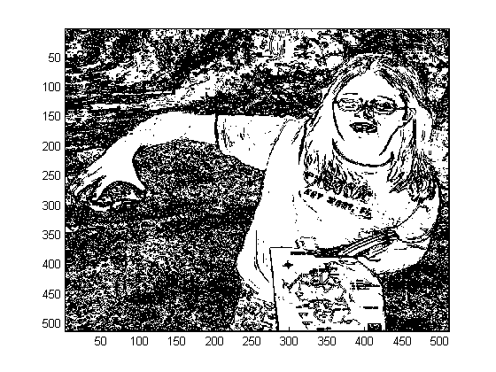

Generating Code for Embedded MATLAB
This is a demonstration of some aspects of Embedded MATLAB™ C-code generation (emlc). You will generate embeddable C-code from MATLAB code, compile, run and view the generated C-code, and display the results.
Contents
- Description of the Demonstration
- Copy Required Files
- Inspect the Sobel Edge-Detection Function
- Display the Original Image
- Inspect the C Main Function
- Create the Raw Binary Image File
- Compile the MATLAB code into an Executable File
- Inspect the Generated Code
- Run the Compiled Edge-Detection Algorithm
- Display the Converted Image
Description of the Demonstration
In this example, you will use some standard MATLAB® library functions to detect edges in an image. Edges are detected by convolving the image with a simple convolution kernel devised by Sobel and Feldman.
Copy Required Files
There are MATLAB programs that are needed to run this demonstration. Copy them to a temporary directory. This step requires write-permission to the system's temporary directory.
emlcdir = [tempname filesep 'emlcdir']; if ~exist(emlcdir,'dir') mkdir(emlcdir); end emlcsrc = ... fullfile(matlabroot,'toolbox','rtw','rtwdemos','rtwdemo_emlcmain.m'); copyfile(emlcsrc,fullfile(emlcdir,'main.m'),'f'); emlcsrc = ... fullfile(matlabroot,'toolbox','rtw','rtwdemos','rtwdemo_emlcsobel.m'); copyfile(emlcsrc,emlcdir,'f'); emlcsrc = ... fullfile(matlabroot,'toolbox','rtw','rtwdemos','rtwdemo_maggie.gif'); copyfile(emlcsrc,emlcdir,'f');
Inspect the Sobel Edge-Detection Function
The function that performs the edge detection is in file rtwdemo_emlcsobel.m:
type(fullfile(emlcdir,'rtwdemo_emlcsobel.m'))
function edgeImage = rtwdemo_emlcsobel(originalImage, threshHold) %#eml % Sobel edge-detection k = [1 2 1; 0 0 0; -1 -2 -1]; H = conv2(double(originalImage),k, 'same'); V = conv2(double(originalImage),k','same'); E = sqrt(H.*H + V.*V); edgeImage = uint8((E < threshHold) * 255);
The following variables are use in this function:
- originalImage is the input image matrix of class uint8.
- threshHold is the input cut-off point for the gradient vector. After applying the convolution, pixel values below this threshold will be black, otherwise they will be white.
- k is the Sobel edge-detection convolution kernel.
- H represents the horizontal edges of the original image.
- V represents the vertical edges of the original image.
- E represents the pixel gradients of the original image.
- edgeImage is the output image of the same size as originalImage.
Changing the value of threshHold affects the edge-detection resolution.
Display the Original Image
So that you can see the effect of the Sobel filter, you use the sample image in the following steps. Here you can see the original image.
[originalImage map] = imread('rtwdemo_maggie.gif','gif'); scrsz = get(0,'ScreenSize'); h1=figure; r = get(h1,'Position'); r(1) = scrsz(3)/2-r(3)-5; set(h1,'Position',r); colormap(map); image(originalImage);

Inspect the C Main Function
When using emlc to create an executable file, you need to provide the necessary support files, including in particular a main function. In a typical embedded application, you will hand-write this main function directly in C code. In this demonstration, you will generate the main function from a MATLAB program. This main function has responsibility for loading the original image from disk, calling the Sobel edge-detection algorithm, then writing the transformed image back to disk. To avoid complications associated with different file formats, the image will be stored on disk as a 512*512 array of 'int8' values.
type(fullfile(emlcdir,'main.m'))
function rc = main %#ok file name is rtwdemo_emlcmain
%#eml
imageSize = uint32(512*512);
fid = eml.opaque('FILE*','NULL');
fileName = cstring('rtwdemo_maggie.bin');
% Read the original image
filePerm = cstring('r+b');
fid = eml.ceval('fopen',eml.rref(fileName),eml.rref(filePerm));
originalImage = uint8(zeros(512,512));
eml.ceval('fread',eml.wref(originalImage),uint32(1),imageSize,fid);
% Detect edges
threshHold = 75;
edgeImage = rtwdemo_emlcsobel(originalImage, threshHold);
% Write new image
eml.ceval('rewind',fid);
eml.ceval('fwrite',eml.rref(edgeImage),uint32(1),imageSize,fid);
eml.ceval('fclose',fid);
rc = int32(0);
% Convert char array to c-string
function y = cstring(u)
y = [u 0];
The main function shows typical usage of the custom C-code integration features of emlc. These features allow you to interface directly with C code at a very low level. You can not only call your own C functions from MATLAB code, but you can also call all the standard library functions. In this particular demonstration, you will be using the stdio library to read and write files.
The following variables are use in the main function:
- imageSize is the size, in bytes, of the image.
- fileName is the name of the binary image file. The same file name is used for both input and output.
- filePerm is a string specifying the fopen file permissions.
- fid is the file identifier used for reading and writing image files. Notice that this variable is declared using eml.opaque. Once this variable has been declared in this way, you can use it as an argument to the stdio library functions for manipulating files.
- originalImage is the input image matrix of class uint8. This image is loaded using the stdio library function fread.
- threshHold is the input cut-off point for the gradient vector.
- edgeImage is the output image of the same size as originalImage.
- rc is the output return code from the main function.
Note in this main function the use of the sub-function cstring to convert MATLAB character arrays to C zero-terminated strings.
Create the Raw Binary Image File
You will now create a binary image file that does not contain any color maps or other information. This file will be read by the executable that you will create in subsequent steps.
emlcurdir = pwd; cd(emlcdir); fid = fopen('rtwdemo_maggie.bin','Wb'); fwrite(fid,originalImage,'uint8'); fclose(fid);
Compile the MATLAB code into an Executable File
You will now compile the main function and the Sobel edge-detection subroutine to create an executable. Since you are using the stdio library to read and write the image files, you need to specify stdio.h as part of the compilation.
You configure Real-Time Workshop and Real-Time Workshop Embedded Coder options using configuration objects, which are provided to emlc via the -s option. There are two configuration objects, and you can interact with them programmatically or with a dialog. In this case, we'll turn on compiler optimizations. Use open('rtwcfg') and open('hwcfg'), to interact with the options via a dialog.
rtwcfg = emlcoder.RTWConfig; hwcfg = emlcoder.HardwareImplementation; rtwcfg.RTWCompilerOptimization = 'On'; emlc('-s', rtwcfg, '-s', hwcfg, '-T','rtw:exe', ... '-o', 'rtwdemo_emlcsobel', 'main.m', 'stdio.h')
Inspect the Generated Code
After executing the steps above, you may inspect the generated file 'main.c': matlab:edit(fullfile(emlcdir,'emcprj','rtwexe','main','main.c'))
Run the Compiled Edge-Detection Algorithm
The compiled edge-detection algorithm now exists as an executable that you can invoke. When you execute the program, it will replace the image file with an edge-detected version.
system('rtwdemo_emlcsobel');
Display the Converted Image
You can now load and display the new image.
fid = fopen('rtwdemo_maggie.bin','r'); edgeImage = uint8(fread(fid,[512,512],'uint8')); fclose(fid); h2=figure; r = get(h2,'Position'); r(1) = scrsz(3)/2+5; set(h2,'Position',r); colormap(map); image(edgeImage); cd(emlcurdir);